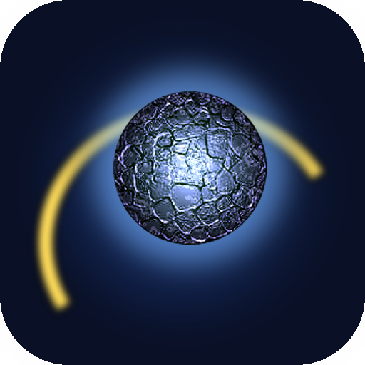
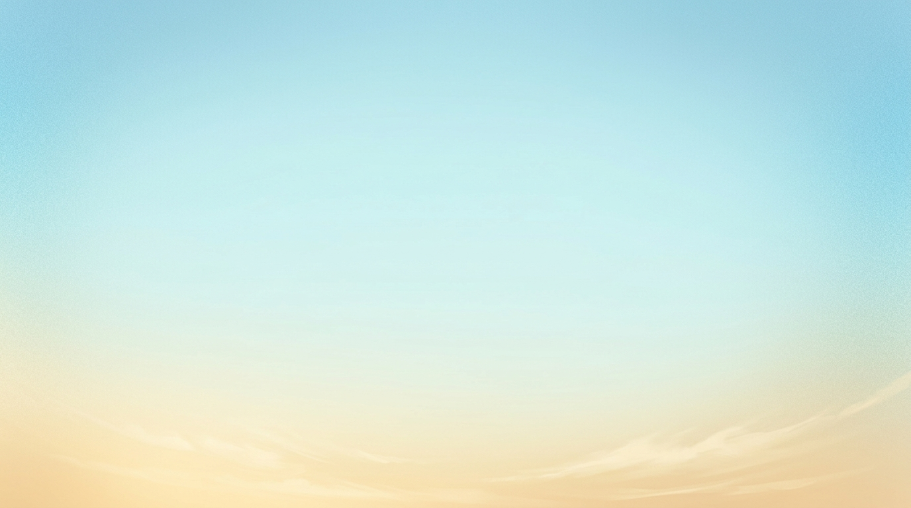
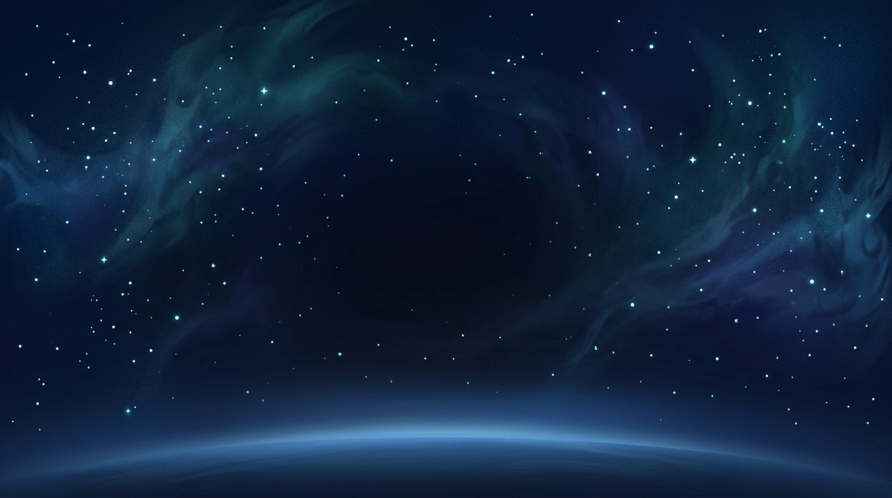
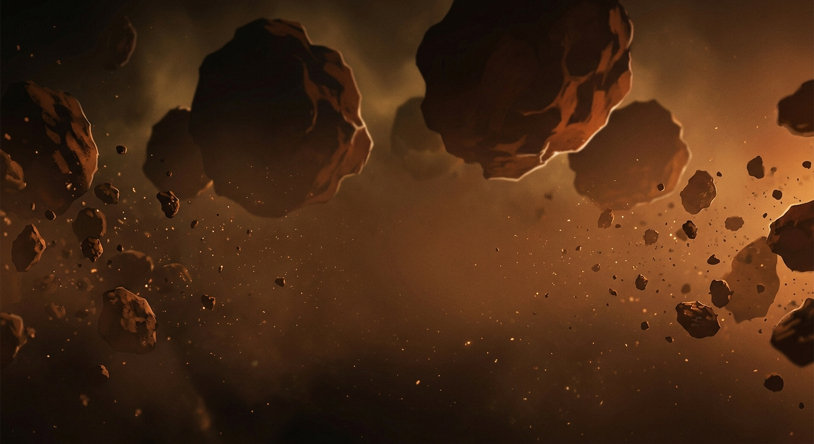
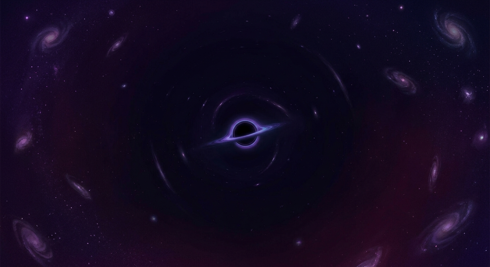

Um dedo, um lançamento
Escolha ângulo e força no estilingue. Depois solte e acompanhe a sonda atravessar o espaço.
// arcade espacial · Android
Puxe o estilingue e lance sua sonda em um campo infinito de bouncers. Mire, use seus impulsos no momento certo e supere seu recorde em Galaxy Pinball.







Escolha ângulo e força no estilingue. Depois solte e acompanhe a sonda atravessar o espaço.
Explore um campo procedural que fica mais denso e imprevisível conforme você sobe.
Use o Jato no ar, ative a Supernova diária e gaste Dust para melhorar sua próxima corrida.
Sem conta, cadastro ou login. Jogue em inglês ou português, mesmo sem conexão.
Quiques consomem energia. Planeje sua trajetória e tente chegar mais longe a cada partida.
O jogo é gratuito e oferece anúncios de vídeo premiados opcionais para dobrar a recompensa de uma corrida.